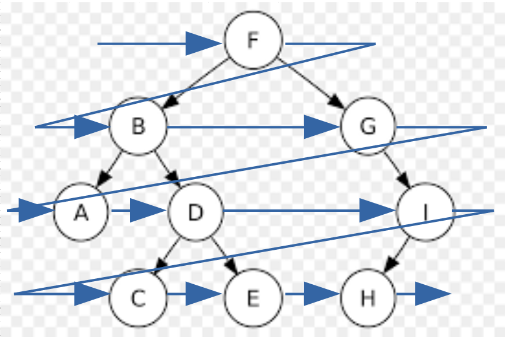
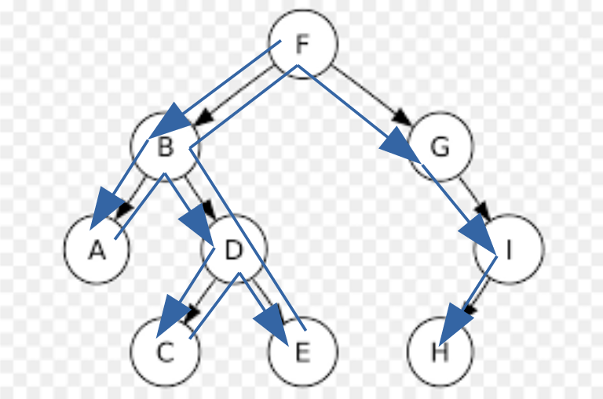
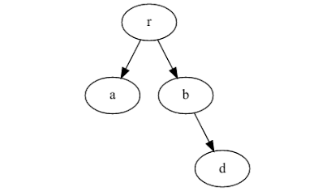
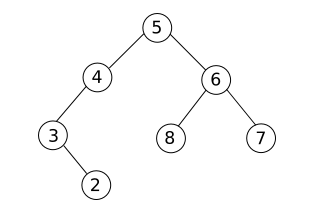
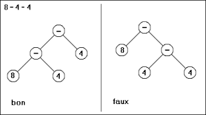
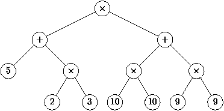

Arbres binaires
Les piles, les files et les listes sont des structures linéaires. Les données y sont rangés selon un ordre précis. Il existe cependant d'autres structures qui ne sont pas linéaires. C'est le cas des graphes qui seront étudiés plus tard et en particulier des structures arborescentes : les arbres.
Notion d'arbre
Un arbre est un nœud possédant éventuellement un ou plusieurs enfants qui sont eux même des nœud possédant éventuellement un ou plusieurs enfants. Chaque nœud (sauf celui de départ) ne possédant qu'un seul nœud parent.

Exemples :
- Les listes simplement chaînées sont des exemples d'arbre très simple où les nœuds (sauf le dernier) ne possède qu'un seul enfant.
- Les dossiers et les fichiers sur un disque dur forment un arbre.


Vocabulaire :
- Un arbre est hiérarchisé, à partir du seul nœud qui n'a pas de parent : sa racine.
- Les nœuds qui n'ont pas d'enfants sont des feuilles.
- Les chemins partant de la racine à l'une des feuilles est un branches.
- La taille d'un arbre est égal au nombre de nœuds (racine et feuilles comprises).
- La hauteur d'un arbre est égale à la longueur de la plus grande branche.

- Quelle est la racine de cet arbre ?
- Quelles sont les feuilles de cet arbre ?
- Quelles est la hauteur de cet arbre ?
- Quelles est la taille de cet arbre ?
Arbres binaires
Nous allons maintenant nous concentrer sur les arbres binaires : un arbre dont les nœuds ont uniquement 0, 1 ou 2 enfants. On appelle alors ces enfants fils droit et fils gauche ou encore sous arbre droit et sous arbre gauche.


- Quelle est la racine de cet arbre ?
- Quelles sont les feuilles de cet arbre ?
- Quelles est la hauteur de cet arbre ?
- Quelles est la taille de cet arbre ?
- Quel est le sous arbre droit du nœud B ?
- Quel est le sous arbre gauche du nœud I ?
- Quel est le sous arbre gauche du nœud G ?
Parcours d'un arbre binaire
Parcours en largeur
Il y a plusieurs façons de parcourir un arbre. Le premier présenté ici est le parcours en largeur qui passe par chaque nœud niveau après niveau.  Il est très facile de parcourir un arbre en largeur grâce à une file :
créer une file vide
y enfiler la racine
tant que la file n'est pas vide :
défiler un nœud
réaliser le traitement voulu sur ce nœud
enfiler le fils gauche et le fils droit de ce nœud à la file
Parcours en profondeur
En remplaçant la file par une pile, on explore l'arbre branche par branche. On parle alors de parcours en profondeur. 
créer une pile vide
y empiler la racine
tant que la pile n'est pas vide :
dépiler un nœud
réaliser le traitement voulu sur ce nœud
empiler le fils droit et le fils gauche de ce nœud à la pile
- avant ces enfants, on parle de parcours préfixe ;
- après le fils gauche mais avant le fils droit, on parle de parcours infixe ;
- après ces enfants, on parle de parcours postfixe.
- En réalisant un parcours en profondeur grâce à une pile comme vue ci-dessus, quel type de parcours réalise-t-on ?
- En réalisant un parcours en profondeur préfixe du graphe suivant, quel est l'ordre de traitement des nœuds ?
- En réalisant un parcours en profondeur postfixe du graphe suivant, quel est l'ordre de traitement des nœuds ?
- En réalisant un parcours en profondeur infixe du graphe suivant, quel est l'ordre de traitement des nœuds ?
fonction parcours(nœud)
réaliser le traitement désiré sur le nœud
appeler la fonction parcours sur le fils gauche
appeler la fonction parcours sur le fils droit
fonction parcours(nœud)
appeler la fonction parcours sur le fils gauche
appeler la fonction parcours sur le fils droit
réaliser le traitement désiré sur le nœud
fonction parcours(nœud)
appeler la fonction parcours sur le fils gauche
réaliser le traitement désiré sur le nœud
appeler la fonction parcours sur le fils droit
Implémentations
Grâce à un tableau ou à un dictionnaire
On peut représenter les informations de chaque nœud dans un tableau.Exemple : 
| id_nœud | valeur | fils_gauche | fils_droit |
|---|---|---|---|
| 0 | "r" | 1 | 2 |
| 1 | "a" | None | None |
| 2 | "b" | None | 3 |
| 3 | "d" | None | None |
arbre = {}
arbre[0] = ["r", 1, 2]
arbre[1] = ["a", None, None]
arbre[2] = ["b", None, 3]
arbre[3] = ["d", None, None]
arbre = {}
arbre["o"] = ["o", None, "m1"]
arbre["m1"] = ["m", None, None]
arbre["p"] = ["p", "o", "m2"]
arbre["e"] = ["e", None, None]
arbre["m2"] = ["m", "e", "s"]
arbre["s"] = ["s", None, None]
arbre = [["r", 1, 2],
["a", None, None],
["b", None, 3],
["d", None, None]]
arbre = [["e", None, None],
["i", None, None],
["o", 1, None],
["p", 2, 4],
["r", 0, 5],
["s", None, None]]
Grâce à des listes imbriquées
On peut pousser la structure précédente un peu plus loin. Comme les identifiants sont utilisés qu'une seule fois pour identifier un fils, on peut remplacer cet identifiant par la liste représentant l'arbre directement. Toujours pour l'arbre précédent, cela donnerai les listes imbriquées :arbre = ["r", ["a", None, None], ["b", None, ["d", None, None]]
arbre = ["c", ["e", ["i", None, None], ["s", None, None]], ["r", None, ["e", ["s", None, None], None]]]
Grâce à la programmation orienté objet
Un arbre est simplement définit par 3 éléments : sa valeur, son fils gauche et son fils droit. On peut donc utiliser un objet Arbre définit par 3 attributs : la valeur (le type dépend des informations à stocker dans l'arbre) et les deux fils (droit et gauche) eux mêmes de type Arbre. Pour enregistrer un arbre en mémoire, on peut alors :-
Ecrire une longue instruction détaillant les fils de chaque nœud. Exemple :
arbre = Arbre(1, Arbre(2, None, None), Arbre(3, Arbre(4, None, None), Arbre(5, None, None)))
-
Commencer par définir la racine puis ajouter les fils par une suite d'instruction. Exemple :
arbre = Arbre(6, None, None)
arbre.fils_gauche = Arbre(10, None, None)
arbre.fils_droit = Arbre(7, None, None)
arbre.fils_droit.fils_gauche = Arbre(9, None, None)
arbre.fils_droit.fils_droit = Arbre(8, None, None) -
Commencer par le niveau le plus bas puis remonter jusqu'à la racine. Exemple :
A = Arbre(15, None, None)
B = Arbre(14, None, None)
C = Arbre(13, None, None)
D = Arbre(12, A, B)
arbre = Arbre(11, C, D)
- Créer une classe Arbre possédant les trois attributs :
- valeur
- fils_gauche
- fils_droit
- Utiliser cette classe pour enregistrer l'arbre suivant dans une variable A. 
- Ajouter une méthode parcours_largeur() affichant la valeur des nœuds de l'arbre selon un parcours en largeur.
- Ajouter une méthode parcours_prefixe() affichant la valeur des nœuds de l'arbre selon un parcours en profondeur prefixe.
- Ajouter une méthode parcours_infixe() affichant la valeur des nœuds de l'arbre selon un parcours en profondeur infixe.
- Ajouter une méthode parcours_postfixe() affichant la valeur des nœuds de l'arbre selon un parcours en profondeur postfixe.
Premières applications
Code Morse
Voilà le dictionnaire donnant les symboles pour toutes les lettres de l'alphabet.
dict_morse = {
'A':'·−',
'B':'−···',
'C':'−·−·',
'D':'−··',
'E':'·',
'F':'··−·',
'G':'−−·',
'H':'····',
'I':'··',
'J':'·−−−',
'K':'−·−',
'L':'·−··',
'M':'−−',
'N':'−·',
'O':'−−−',
'P':'·−−·',
'Q':'−−·−',
'R':'·−·',
'S':'···',
'T':'−',
'U':'··−',
'V':'···−',
'W':'·−−',
'X':'−··−',
'Y':'−·−−',
'Z':'−−··',
' ':' '
}
- Ecrire une fonction encoder_morse(texte) traduisant un texte en lettres vers un texte en morse.
Il n'y a pas besoin d'arbre pour cette question. -
Pour décoder facilement un message en morse, on utilise un arbre où les fils gauches correspondent à l'ajout d'un point, et les fils droits à l'ajout d'un tiret. Les nœuds ont pour valeur la lettre à utiliser lorsque l'on a finit de parcourir la lettre en morse.
Comme les lettres sont codés par au maximum 4 symboles, la hauteur de l'arbre est égale à 4- Ecrire une fonction arbre_morse(dict_morse) qui construit cet arbre à partir du dictionnaire précédent.
- Ecrire une fonction decoder_morse(morse) qui décode en lettres le texte morse donné en morse.
Arbre de jeu
Les arbres permettent de représenter toutes les positions possibles au cours d'un jeu. Cet arbre n'est en général pas binaire car un nœud a autant de fils qu'il y a de coups possibles.
Au jeu du morpion par exemple, la racine a 9 fils car le premier joueur peut placer son symbole dans l'une des 9 cases disponibles. Ces 9 nœuds ont eu même 8 fils car le joueur suivant peut placer son symbole sur une des 8 cases encore libre.
- Au jeu de puissance 4, combien de fils ont la plupart des nœuds de l'arbre représentant toutes les positions ?
- Dans quelle situation ce n'est pas le cas ?
- Quelles positions traduisent les feuilles de cet arbre ?
- Quel est la hauteur de cet arbre de jeu ?
On propose ici d'étudier un arbre de jeu dans une situation où les joueurs n'ont qu'au maximum 2 choix. Il s'agît d'une variante du jeu de Nim.
Voici les règles du jeu :
On place sur une table 5 allumettes. A tour de rôle, les joueurs ont le choix de retirer soit 1 seule, soit 2 allumettes.
Le joueur qui retire la dernière allumette a gagné.
Dans ce jeu, une position est défini par 2 choses : le nombre d'allumettes restantes et le nom du prochain joueur.
Comme le nom du joueur peut se déterminer aussi en regardant à quel niveau se situe le nœud correspondant à cette situation, il faut uniquement stocker le nombre d'allumettes restantes.
L'arbre de jeu est binaire. On choisit que le fils gauche représente la situation où le joueur retire une seule allumette et que le fils droit représente la situation où le joueur retire deux allumettes. Les feuilles correspondent au cas où il n'y a plus aucune allumettes restantes.
- Quelle est la hauteur de cet arbre de jeu ?
- Dessiner l'arbre de ce jeu.
- On donne la couleur rouge au joueur qui commence, la couleur bleu à l'autre joueur. Montrer que le joueur rouge peut toujours gagner, quelque-soit les coups du joueur bleu.
- Ecrire une fonction arbre_jeu_variante_nim() qui construit cet arbre.
Arbre et expression mathématiques
Les opérations +, −, × et ÷ sont des opérations binaires : elle s'effectuent sur deux nombres (ou expression).On peut donc facilement représenter les expressions mathématiques construites sur ces 4 opérations à l'aide d'un arbre où les nœuds sont des opérateurs sauf les feuilles qui sont des nombres. Exemple : 
- Représenter par un arbre l'expression (4 + 2) × (9 − (1 + 3))
- Quelle expression mathématique représente l'arbre suivant ? 
- Stocker dans une variable l'arbre de la question précédente.
-
Afficher les nœuds selon un parcours en profondeur préfixe.
On parle de notation polonaise (proposée en 1924 par le mathématicien polonais Jan Łukasiewicz).
Les opérations sont vues comme des fonctions à deux variables. -
Afficher les nœuds selon un parcours en profondeur postfixe.
On parle de notation polonaise inverse.
En plaçant ces nœuds dans une pile, il est très facile d'écrire un programme calculant les expressions mathématiques. -
Afficher les nœuds selon un parcours en profondeur infixe en ajoutant en plus :
- une parenthèse ouvrante avant d'afficher le fils gauche
- une parenthèse fermante après avoir affiché le fils droit